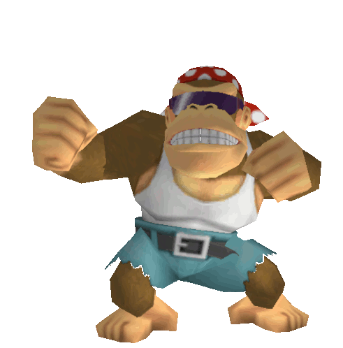

He's the leader of the bunch, you know him well. Donkey kong (the third) is the main man of the DK family. He loves his bananas and will protect his banana horde from any unwanted visitors. DK does not only like his bananas but his family is very inprtant to him as he will always go out of his way to save them from any pescy kremlins.

Funky, Funky, Funky Kong is one rad kong. Funky is one of the fan favorite kongs with his dope atitude and cool surf board. While he does not go on any adventures of his own, he is always up for helping his friends on their adventures usually via transportation. While Funky may not go on so many adventures he recently starred along side Donkey Kong in Donkey Kong Tropical Freeze for the Switch.
Diddy kong is Donkey kongs trusty side kick always looking to be as cool DK. Diddy kong always joins in the fight against the kremlins as he acompanies donkey kong to reclaim his bananas. Diddy kong is also very reliable as he once saved DK from King K Rools grip. With his electric guitar this cool kong will always rock in style.